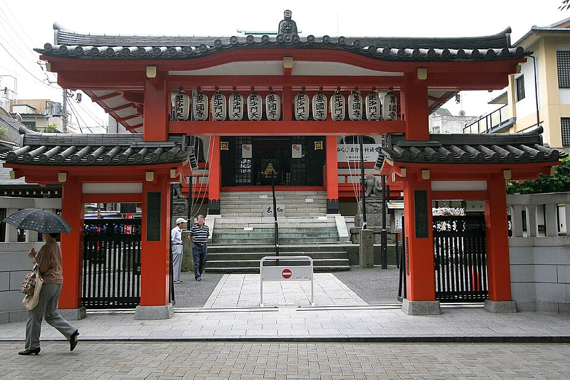
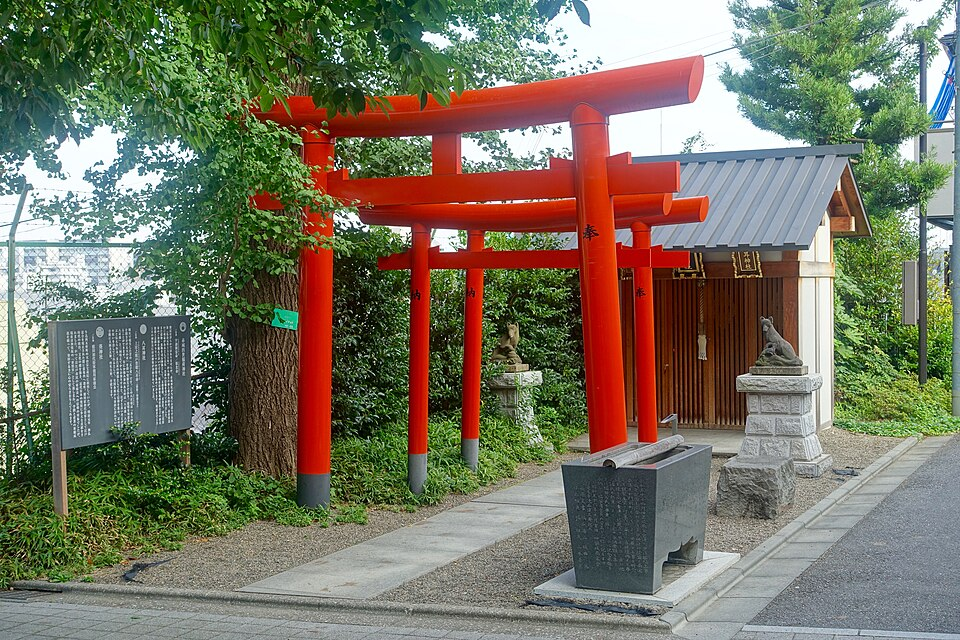
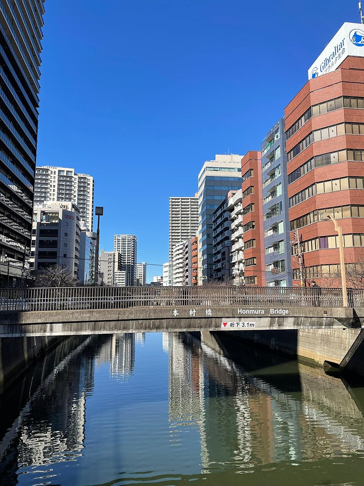
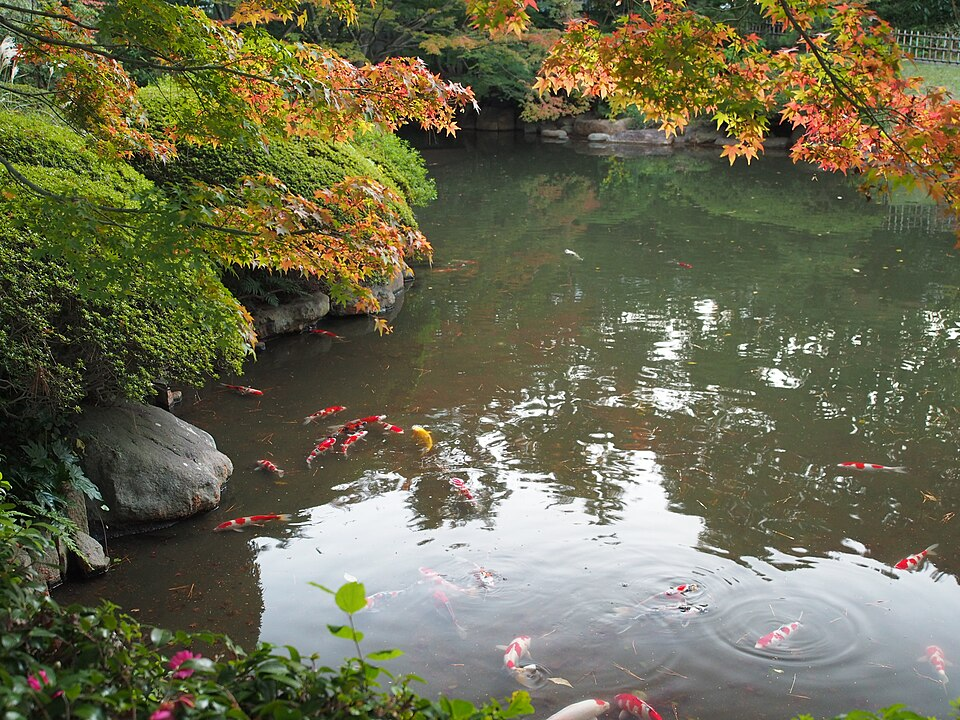
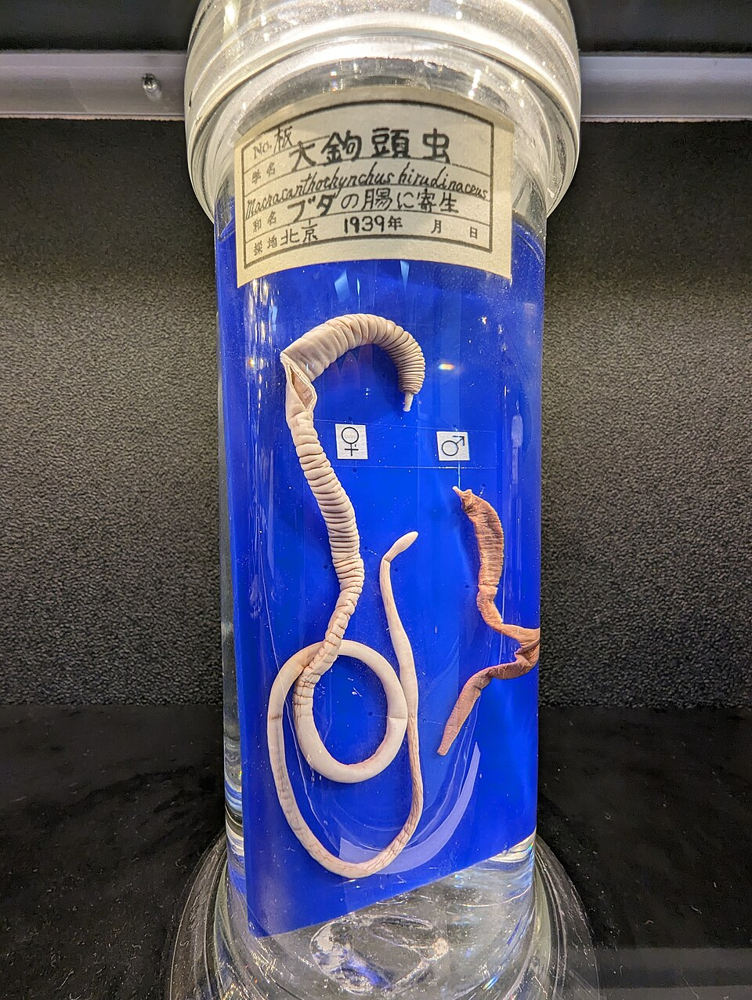
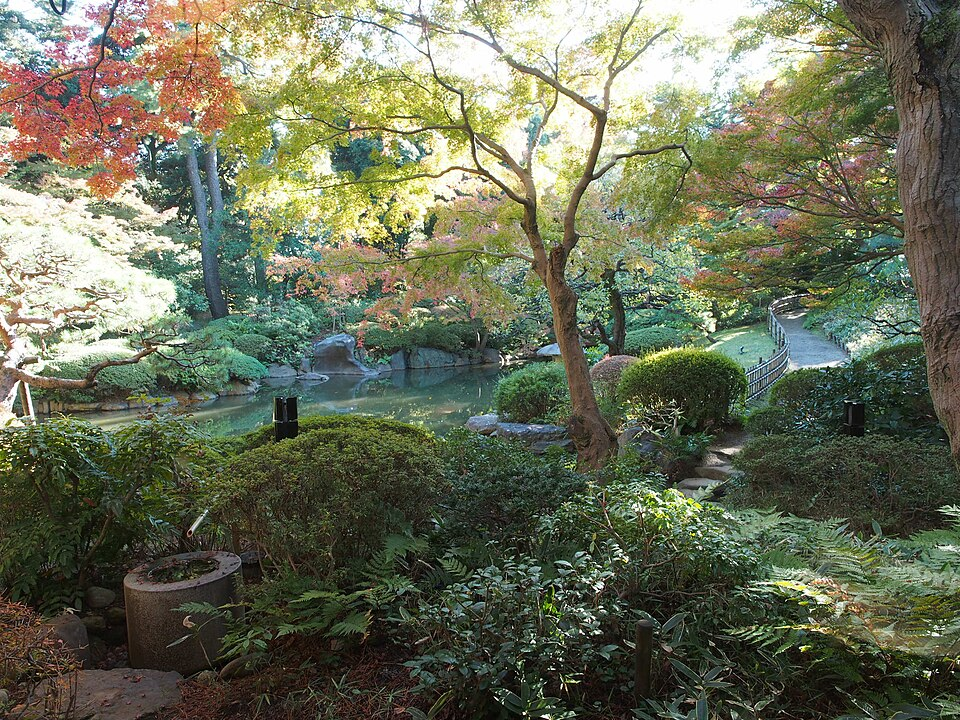
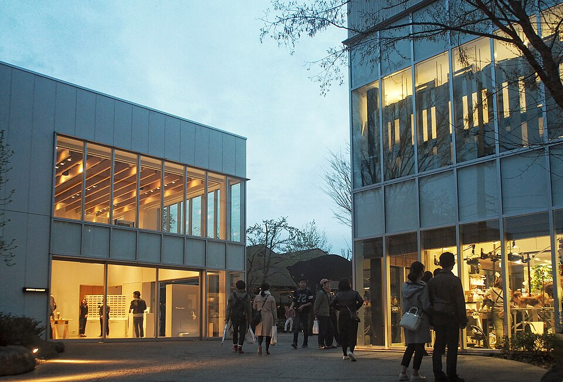
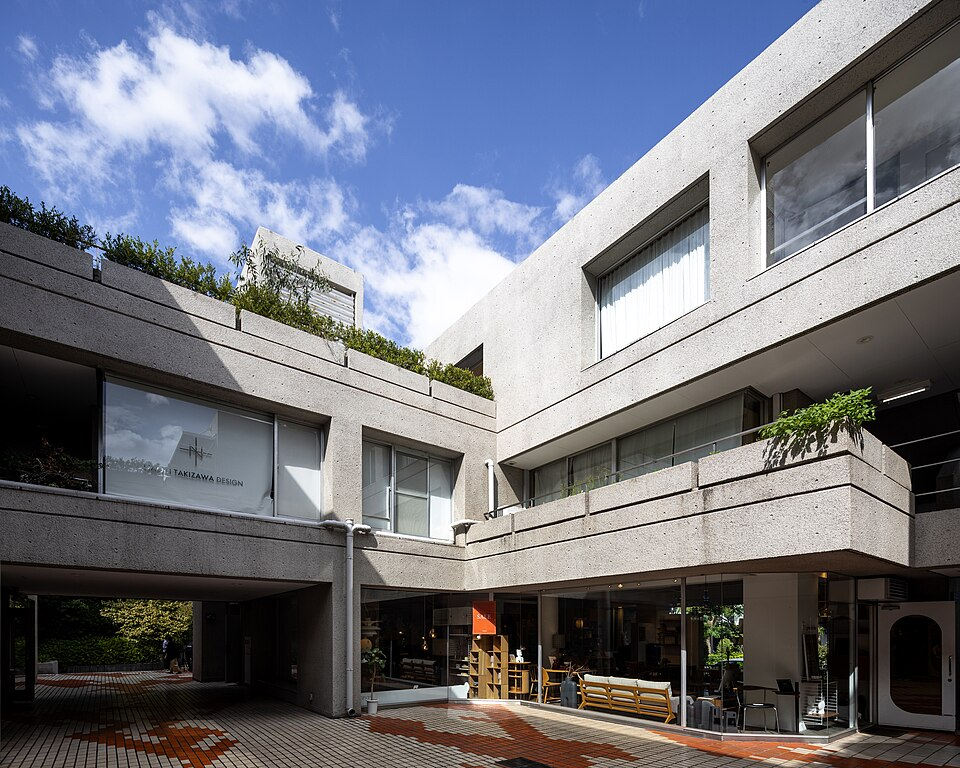
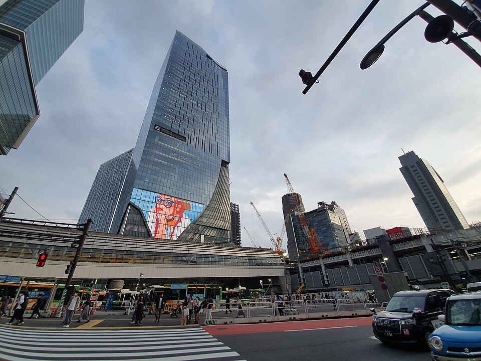

Tokyo · вс 11.10 · маршрут дня
🌳 Вариант через парки (на другой день)
11.10 выбран основной план ниже.
Kagurazaka → Shinjuku Gyoen (бывший императорский сад) → Meiji Jingu (святилище императора) → Yoyogi Park → пешком к Shibuya Sky. Вместо Meguro, Nakameguro и Daikanyama.
Отель → Iidabashi
JR Akihabara: жёлтая линия Sobu (на Mitaka / Nakano), 3 остановки: Ochanomizu, Suidobashi, Iidabashi. Выход West (西口), улица Kagurazaka начинается через перекрёсток.
Kagurazaka + фестиваль кошек Bakeneko
Старый квартал гейш: на пике 120 ресторанов и 700 гейш. Каменные переулки, красные ворота храма Bishamonten, святилище Akagi, перестроенное под руководством Kengo Kuma. Сегодня 10:00-17:00 по главной улице идут парады людей в кошачьем гриме.



_Kagurazaka.jpg){kind=link}




Iidabashi → Meguro
Tokyo Metro Namboku (изумрудная, буква N, на Hiyoshi / Shin-Yokohama), без пересадок, 9 остановок до Meguro.
Meguro: фестиваль сайры и что вокруг
Праздник по старому комедийному рассказу о князе и сайре. Сайра только по заранее записанным талонам, без них - посмотреть на ярмарку 15-20 мин по пути к реке. Рядом интереснее: особняк ар-деко Teien (интерьеры Lalique) и бесплатный музей паразитов с лентецом 8,8 м.












Набережная → Nakameguro, перекус
Вверх по реке Meguro до Nakameguro: деревья по берегам, мосты, кафе и маленькие магазины. Здесь обед или кофе.


Быстрый лёгкий перекус: варианты
- Холодная соба (zaru soba) - гречневая лапша с соусом, лёгкая, 10-15 мин.
- Онигири - рисовые шарики с лососем, тунцом, сливой; в лавках онигири или в любом konbini (7-Eleven, FamilyMart, Lawson), 5 мин на ходу.
- Суши - кайтэн-дзуси (на ленте) или набор на вынос.
- Удон в бульоне - лёгкий горячий вариант.
- Кебаб / шаурма - турецкие киоски есть, но это тяжелее.
Кнопки ниже открывают поиск в Google Maps рядом с точкой: там фото, отзывы и часы работы.
Daikanyama
Тихий квартал на холме: Hillside Terrace архитектора Fumihiko Maki (строили 30 лет), деревянный дом Asakura 1919 года с садом (100 ¥), книжный T-Site.






.jpg){kind=link}
Daikanyama → Shibuya Scramble Square
Вниз в Shibuya, к башне над станцией. Вход Shibuya Sky на 14 этаже, быть к 16:00-16:05.
SHIBUYA SKY
Открытая крыша на 229 м. Сегодня ясно, на западе должен быть виден Fuji.

.jpg){kind=link}

.jpg){kind=link}



Ужин в Shibuya → отель
Зелёная Yamanote (на Shinjuku / Ikebukuro) 2 остановки до Yoyogi, там жёлтая Sobu (на Chiba) до Akihabara. Отель у выхода Electric Town South.